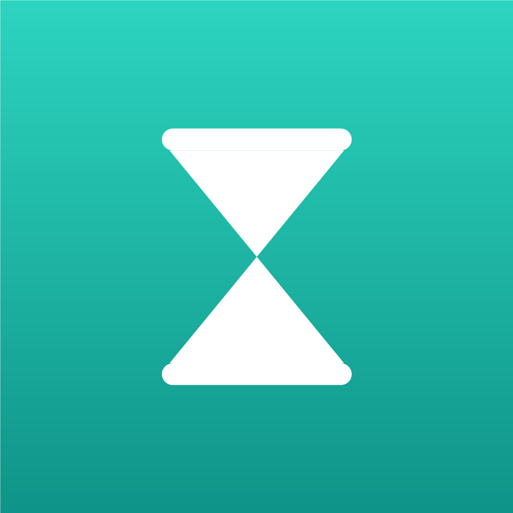

Privacy Policy
Effective date: June 18, 2026
Since is a simple tracker for how long it's been since you last did something. The short version: Since has no accounts, keeps your data on your device, and never sells it.
What stays on your device
Everything you put into Since is stored only in the app's local storage on your phone:
- The things you track, their emoji, intervals, and your "done" history
- Your preferences (appearance, sort order)
There is no user account and no server that holds your data. Deleting the app deletes everything.
Notifications
Optional reminders are scheduled locally on your device. Since does not use remote push servers and holds no push tokens.
Purchases
The optional one-time "Unlimited" unlock is processed by Apple. We use RevenueCat to validate the purchase; RevenueCat receives an anonymous app-generated identifier and Apple receipt data — never the things you track. See the RevenueCat Privacy Policy. We never see your payment details.
What we don't do
- No accounts, sign-ins, or profiles
- No advertising and no ad trackers
- No analytics or tracking across other apps and websites
- No selling or renting of data — there is nothing to sell
Children
Since is not directed at children under 13, and we do not knowingly collect personal information from them.
Changes
If this policy changes, we will update this page and the effective date above.
Contact
Questions? Email phophooe@gmail.com.